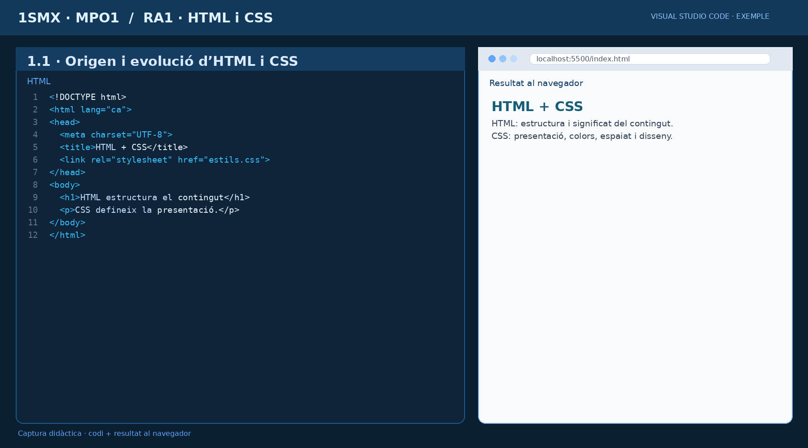
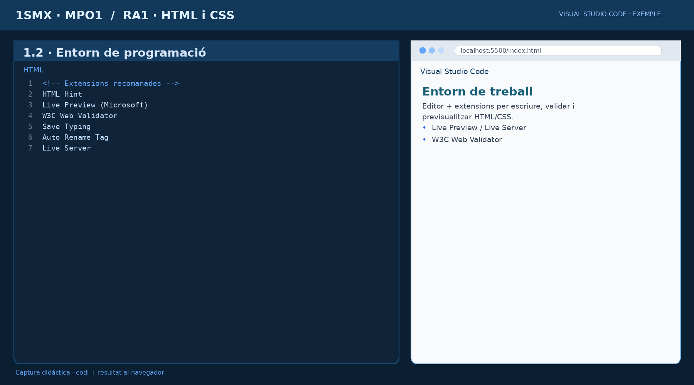
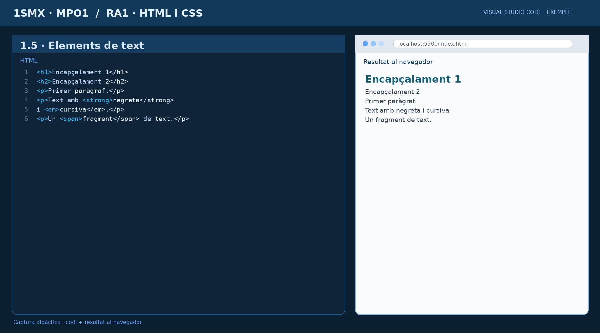
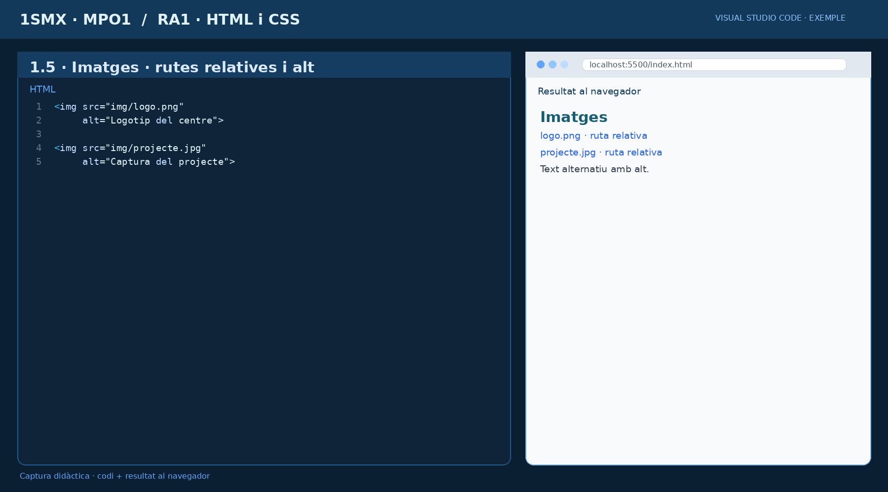
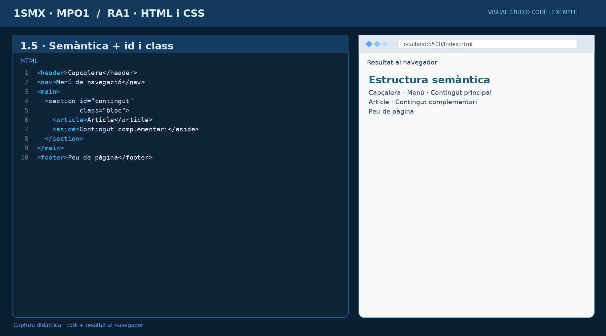
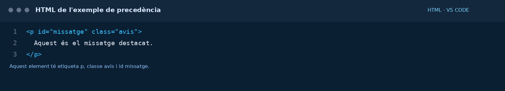
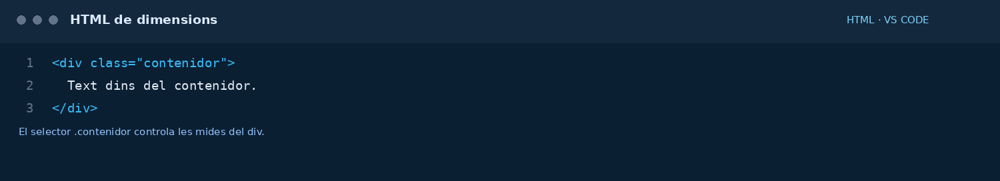

Aprèn a construir una pàgina web des de l'estructura HTML fins a la presentació amb CSS. Cada concepte combina codi, resultat al navegador i exemples per practicar.
01HTML
Estructura i significat del contingut.
02CSS
Presentació, colors, text i caixes.
03Pràctica
Modifica el codi i observa el resultat.
Objectiu del RA1 · Crear prototips visuals de programes i aplicacions web amb HTML i CSS.
1.1
Origen i evolució d'HTML i CSS
HTML i CSS són llenguatges amb funcions diferents però complementàries: HTML estructura el contingut i CSS en defineix la presentació. En aquest RA treballarem amb HTML5 i CSS per crear prototips visuals.
HTMLHyperText Markup LanguageMarcatge del contingut i estructura del document.
CSSCascading Style SheetsFulls d'estil per controlar la presentació.
EstàndardsWeb estàndardRegles i especificacions que afavoreixen una web interoperable.

1.2
Entorns de programació HTML i CSS
El material de l'aula proposa Visual Studio Code i un conjunt de connectors per escriure, previsualitzar i validar els documents.
HTML HintInforma dels errors HTML.
Live PreviewPrevisualització dins de VS Code.
W3C Web ValidatorValida HTML i CSS segons les regles del W3C.
Save TypingDesa automàticament mentre escrius.
Auto Rename TagCanvia les etiquetes d'obertura i tancament conjuntament.
Live ServerObre la pàgina en una pestanya del navegador.

Instal·lació de Visual Studio Code a Ubuntu
A Ubuntu, Visual Studio Code es pot instal·lar des del terminal utilitzant snap. Obre un terminal i executa una de les dues opcions següents:
<div>Primera divisió</div>
<div>Segona divisió</div>
<p>Text amb <strong>negreta</strong>
i <em>cursiva</em>.</p>
<p>Un <span>fragment</span> de text.</p>
<hr>
Navegador
Primera divisió
Segona divisió
Text amb negreta i cursiva.
Un fragment de text.

Llistats
ol crea una llista ordenada, ul una llista no ordenada i li cada ítem.
img mostra una imatge. Amb src indiquem la ruta i amb alt una descripció alternativa. Enllaços i imatges han de fer servir rutes relatives quan els recursos formen part del projecte.
Exemple 1 · Ruta relativa
<img src="img/logo.png"
alt="Logotip del centre">
Navegador
</>
Logotip del centre
Exemple 2 · Imatge de projecte
<img src="img/projecte.jpg"
alt="Captura del projecte">
Navegador
CAPTURA PROJECTE

Taules · diversos exemples
Una taula es construeix amb table, files amb tr, cel·les amb td i capçaleres amb th. També es poden fusionar files o columnes amb rowspan i colspan.
Important · L'atribut for del label ha de coincidir amb l'id del camp que acompanya.
Etiquetes semàntiques + id i class
Les etiquetes semàntiques donen significat a l'estructura: header, footer, main, nav, article, section i aside. Per si soles no modifiquen l'aspecte: el CSS és qui el presenta.
<header>Capçalera
<nav>Menú
<main>Contingut principal
<article>Article
<section>Secció
<aside>Contingut complementari
<footer>Peu de pàgina
id i class
<section id="contingut"
class="bloc important">
Contingut de la secció
</section>
Navegador
#contingut.blocid identifica de manera única; class agrupa elements.

1.6
Estructura dels documents CSS
En aquest apartat aprendràs com es connecta CSS amb HTML, com s'escriu una regla i com decideix el navegador quin estil aplicar quan hi ha més d'una regla.
HTML
Fitxer HTML per practicar
Descarrega el document base que utilitzarem durant les explicacions.
CSS significa Cascading Style Sheets, és a dir, fulls d'estil en cascada. HTML defineix el contingut i l'estructura; CSS defineix com es presenta: colors, tipus de lletra, mides, espais, vores i distribució.
HTML · contingut
<h1>Benvinguts a la meva web</h1>
<p>Aquesta és una pàgina d'exemple.</p>
Sense estils personalitzats
Benvinguts a la meva web
Aquesta és una pàgina d'exemple.
Pas 2. Connectar el CSS extern amb HTML
És recomanable guardar els estils en un fitxer separat, per exemple css/estils.css. D'aquesta manera podem canviar el disseny sense reescriure el contingut HTML.
Crea una carpeta anomenada css.
Dins, crea el fitxer estils.css.
Afegeix l'etiqueta link dins de head del document HTML.
Un id identifica un únic element dins de la pàgina; no repeteixis el mateix id.
Una class es pot reutilitzar en molts elements.
Un espai, com a nav a, indica que l'element seleccionat està dins del contenidor indicat.
:hover permet canviar l'aspecte quan el ratolí passa per sobre.
La coma agrupa selectors: h1, h2 aplica la regla a tots dos.
Pas 5. Comentaris CSS
Els comentaris serveixen per deixar notes al codi. El navegador no els mostra com a contingut de la pàgina.
CSS
/* Aquest és un comentari.
Explica per què fem servir aquesta regla. */
p {
color: #334155;
}
Pas 6. Quina regla té prioritat? Precedència i especificitat
De vegades dues regles intenten canviar la mateixa propietat del mateix element. El navegador ha de decidir quin valor utilitza. Aquesta decisió forma part de la cascada.
Per començar, recorda aquesta idea pràctica: un selector que identifica un element de manera més concreta acostuma a tenir més pes que un selector general.
Aquest paràgraf és vermell perquè té id="missatge".
El selector d'id és més específic que el de classe i el d'etiqueta.

HTML relacionat amb pas 6. quina regla té prioritat? precedència i especificitat.
El selector p és general: afecta tots els paràgrafs.
El selector .avís afecta els elements amb aquesta classe.
El selector #missatge identifica un element concret i, en aquest exemple, guanya.
Si dues regles tenen el mateix pes, normalment preval la que apareix més avall al full d'estils.
Consell: evita posar estils diferents i contradictoris a la mateixa propietat sense necessitat. Escriu regles clares i comprova el resultat al navegador.
1.7
Propietats CSS
Les propietats CSS són les instruccions que indiquen al navegador com ha de mostrar cada element. Les treballarem per grups i amb exemples curts. Canvia els valors, desa el fitxer i observa què passa.
1. Propietats de text i tipografia
Propietat
Per a què serveix
Valors d'exemple
text-align
Alinea el text horitzontalment.
left, right, center, justify
text-decoration
Afegeix o treu decoracions.
underline, line-through, none
text-transform
Canvia la presentació de les lletres.
uppercase, lowercase, capitalize
line-height
Controla l'espai vertical entre línies.
1.5, 150%
font-family
Tria la família tipogràfica. Es poden indicar alternatives.
HTML corresponent a l'exemple de text i tipografia.
Pas a pas: prova primer només una propietat. Quan entenguis el canvi, afegeix la següent. Així sabràs quina regla provoca cada efecte.
2. Colors i fons
color canvia el color del text; background-color canvia el fons de l'element. Pots escriure colors amb noms (red), codis hexadecimals (#2563EB) o funcions de color com rgba().
Les propietats de mida permeten controlar la dimensió dels elements. min-width i min-height marquen una mida mínima; max-width i max-height marquen un límit màxim.
Aquest contenidor té una alçada mínima de 100 px i no supera una amplada màxima de 500 px.

HTML corresponent a l'exemple de dimensions.
6. Distribuir elements amb Flexbox
Flexbox és un sistema de maquetació per distribuir elements en una dimensió: en una fila o en una columna. S’activa al contenidor pare amb display: flex;; les propietats de distribució s’apliquen al pare i les de mida o ordre, als elements fills.
Comparació visual dels sis valors principals de justify-content.
Pas 4. Alinea els elements en l’eix transversal amb align-items
align-items controla l’alineació dels fills en l’eix transversal, és a dir, l’eix perpendicular al principal. Per veure bé la diferència, dona al contenidor una alçada (o amplada, si està en columna) suficient.
stretch: els elements s’estiren per ocupar l’espai transversal disponible si no tenen una mida fixada en aquest eix.
flex-start: s’alineen al principi de l’eix transversal.
Els valors de align-items canvien la posició o l’estirament dels fills en l’eix transversal.
Pas 5. Separa els elements amb gap
gap crea un espai constant entre els elements sense haver d’afegir marges a cadascun. També es pot separar l’espaiat de files i columnes amb row-gap i column-gap.
Ampliació: propietats d’ajust — flex-wrap, flex-flow i align-content
flex-wrap indica si els elements poden passar a una altra línia quan no caben:
nowrap: tots intenten mantenir-se en una sola línia (valor per defecte).
wrap: els elements passen a línies noves quan cal.
wrap-reverse: permet diverses línies, però n’inverteix la disposició transversal.
flex-flow és una abreviació que combina flex-direction i flex-wrap. Per exemple: flex-flow: row wrap;.
align-content distribueix les línies entre si quan hi ha diverses línies (normalment amb flex-wrap: wrap) i espai transversal disponible. No substitueix align-items, que alinea els elements dins de cada línia.
Regla pràctica: comença amb display: flex, decideix flex-direction, ajusta l’espai amb justify-content i l’alineació transversal amb align-items. Després afegeix gap per controlar la separació entre els elements.